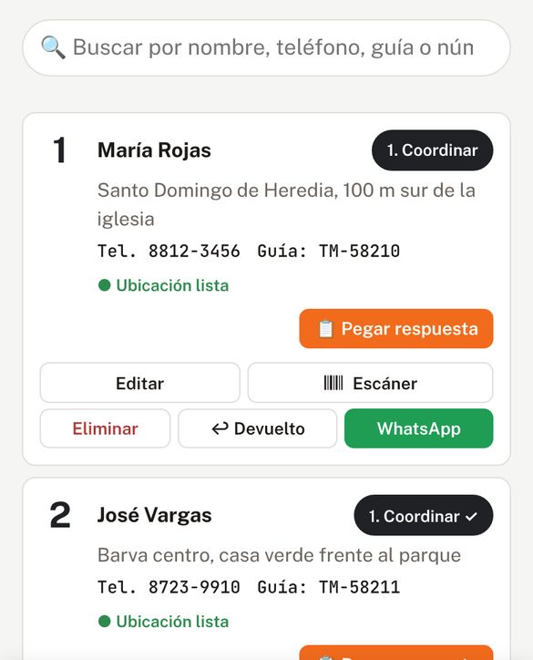
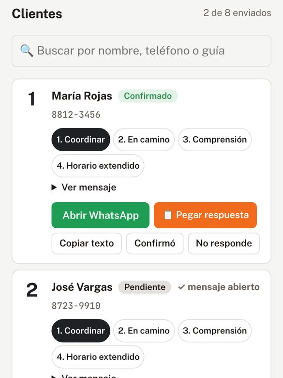
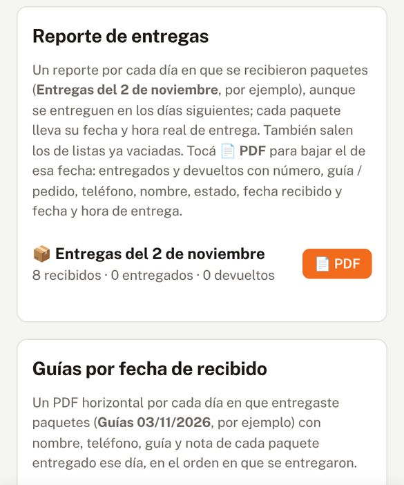

Tus entregas del día, ordenadas desde el celular
RutaFácil es una app para mensajeros que reparten paquetes de compras en línea en Costa Rica. Cargás los paquetes, avisás a cada cliente por WhatsApp con el mensaje ya escrito, salís con la ruta más corta y al final del día tenés el reporte listo.
Funciona en el navegador del celular (Android o iPhone) y en la PC. No hay que instalar nada de una tienda.
¿Para quién es?
Para el mensajero que recibe una carga de paquetes (30, 70 o más) y tiene que coordinar con cada cliente antes de salir, en moto, carro o panel. Sirve si trabajás por tu cuenta o para una empresa de reparto.
Cada cuenta es personal: una persona, un número de teléfono.
Lo que te ahorra
Menos tiempo escribiendo
Un toque abre WhatsApp con el mensaje para ese cliente. Vos solo tocás Enviar.
Menos vueltas
La app ordena las paradas por calles reales y abre cada una en Waze o Google Maps.
Menos paquetes devueltos
El cliente confirma la hora y la ubicación antes de que salgás.
Cuentas claras
Prueba de entrega con GPS, fotos y firma, y un PDF del día con entregados y devueltos.
Cómo funciona
Las capturas y los videos usan datos de ejemplo: los nombres, teléfonos y direcciones son inventados.
1Cargá los paquetes
Escaneá la etiqueta con la cámara (lee la guía, el nombre, el teléfono y la dirección), subí el Excel del día o agregalos a mano. Cada paquete recibe un número fijo.

2Avisá a cada cliente
Elegí el mensaje (coordinar, voy en camino y otros) y tocá Abrir WhatsApp. El mensaje sale desde tu propio WhatsApp. Cuando el cliente contesta, pegás la respuesta y la app saca la hora y la ubicación.

3Salí con la ruta
En Ruta ves el mapa con las paradas en orden y la hora estimada de llegada. En cada parada marcás Entregado con GPS, fotos y la firma de quien recibe, o lo dejás en Hold para después. Mirá el video 5 abajo.
4Cerrá el día
En Cierres bajás el PDF con los entregados y devueltos, la hora de cada entrega y los kilómetros. Tus paquetes quedan guardados en tu cuenta: los ves igual en el celular y en la PC.

Videos de un minuto
Cada video pesa unos 2 a 3 MB y solo se descarga si le das Play.
1. Entrar a la app
2. Cargar los paquetes
3. Avisar por WhatsApp
Hay más videos dentro de la app, en Soporte.
Preguntas frecuentes
¿Cuánto cuesta?
La cuenta se activa con un pago por SINPE Móvil; el monto te lo dice la app al crear la cuenta y el administrador te lo confirma por WhatsApp. La app nunca te pide tarjeta ni claves del banco.
¿Cómo creo la cuenta?
Tocá Crear cuenta, poné tu nombre, tu número de WhatsApp y un PIN de 6 números. El administrador activa la cuenta y te avisa por WhatsApp.
¿Por qué me piden el número de teléfono?
Tu número es tu usuario para entrar y es por donde soporte te escribe sobre la activación de tu cuenta. No se usa para publicidad. Más detalles en la política de privacidad.
¿Y si olvido el PIN o cambio de celular?
Usá tu código de recuperación, que la app te muestra al crear la cuenta. Si no lo tenés, el administrador te ayuda por WhatsApp. Por seguridad, cada cuenta funciona en un solo teléfono a la vez.
¿Quién ve los datos de mis clientes?
Solo vos, desde tu cuenta. No los vendemos ni los compartimos. Los mensajes de WhatsApp salen de tu propio WhatsApp: la app no le escribe a nadie por su cuenta.
¿Funciona sin internet?
Para cargar la ruta, el mapa y respaldar las entregas hace falta internet. Si se cae la señal un rato, la app sigue abierta y respalda cuando vuelve.